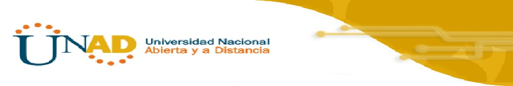

Objetivos del curso:
• Conocer los riesgos que existen con el uso de interner.
• Aprender las alternativas de solución para los riesgos en el uso de internet.
• Aplicar las medidas correctas para minimizar los riesgos informáticos.

OVA Para curso Seguridad Informática
Seguridad Informática 204020 - UNAD ECBTI